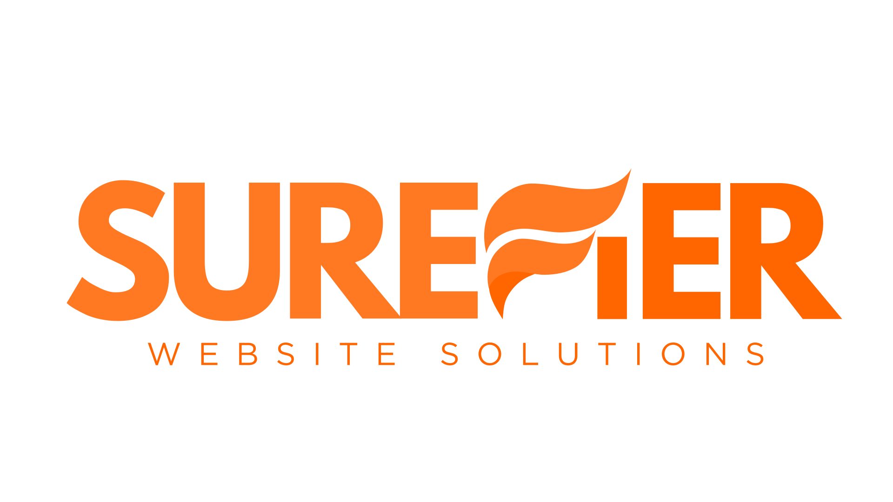

Website & UI/UX design
Clear layouts, intuitive navigation, and a visual identity that feels like you. Design with a purpose, on every screen.
Make it feel right.
WEBSITE DESIGN & DEVELOPMENT
Good websites bring design, content, and usability together. Surefier helps turn those moving parts into a thoughtful digital experience.
WHAT WE DO
A fresh start, a smarter structure, or a better experience—there’s more than one way to move a website forward.
Clear layouts, intuitive navigation, and a visual identity that feels like you. Design with a purpose, on every screen.
Make it feel right.Bring the design to life with responsive pages, considered interactions, and a focus on usability and accessibility.
Make it work well.Organize the information, refine the message, and help visitors find what they need without the guesswork.
Make it make sense.THE THINKING BEHIND THE WORK
People come first.A website should be easy to understand, navigate, and use.
Clarity does the heavy lifting.Every page should have a reason to exist and a message worth reading.
The details add up.From mobile layouts to meaningful content, the small things shape the whole experience.
LET’S TALK
Have an idea, a site that needs some attention, or a question about where to start? Connect with Joey and let’s start a conversation.